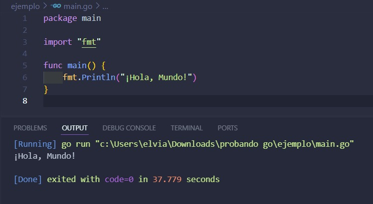
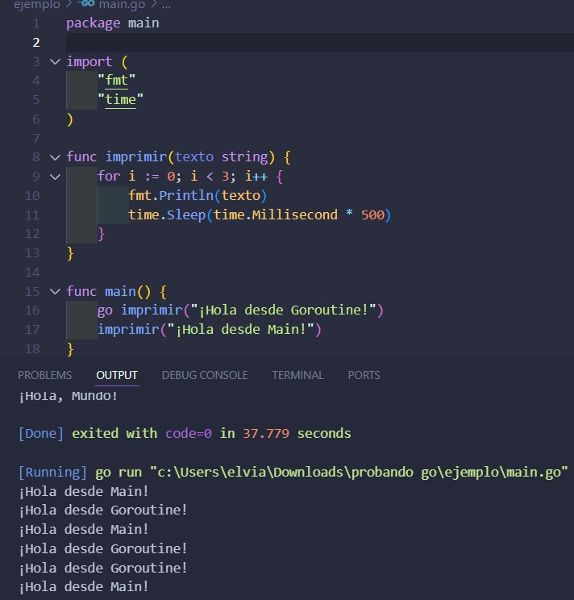

Go, también conocido como Golang, es un lenguaje de programación de código abierto creado por Google en el año 2009. Fue diseñado para resolver problemas comunes de lenguajes como C y C++, priorizando la simplicidad, el rendimiento y la capacidad de manejar aplicaciones concurrentes y paralelas.
Caracteristicas principales de Go
Simplicidad: Sintaxis clara y fácil de leer.
Rendimiento: Compilado a código máquina, lo que lo hace muy rápido.
Portabilidad: Funciona en diferentes sistemas operativos sin necesidad de modificaciones.
Ecosistema rico: Amplia biblioteca estándar y herramientas modernas.
Historia de Go
Fue creado por Robert Griesemer, Rob Pike y Ken Thompson, ingenieros de Google, y lanzado oficialmente en 2009.
Objetivo principal: Crear un lenguaje que combinara la eficiencia y el control de lenguajes como C con la facilidad de uso de lenguajes más modernos.
¿Para que sirve Go?
Go es especialmente util en:
Desarrollo web: APIs y servicios de backend.
Microservicios: Ideal para construir aplicaciones distribuidas.
Aplicaciones en la nube: Muchas herramientas de la nube, como Docker y Kubernetes, están escritas en Go.
Herramientas CLI: Programas de línea de comandos.
ejemplos realizados en Go
ejemplo 1: hola mundo

ejemplo 2: concurrencia con goroutines

aqui tienes un video de una base de Go en 15 minutos
comparacion con otros lenguajes
Caracteristica
Go
Python
Java
Rendimiento
muy rapido
medio
alto
concurrencia
nativo(goroutines)
no nativo
hilos (mas complejos)
simplicidad
alta
alta
moderada
ventajas de Go
Fácil de aprender: Ideal para principiantes y expertos.
Altamente eficiente: Su diseño permite manejar grandes volúmenes de datos sin perder rendimiento.
Compatibilidad con sistemas modernos: Es utilizado ampliamente en servidores, sistemas en la nube y microservicios.
Soporte de comunidad: Un gran ecosistema de desarrolladores y bibliotecas.